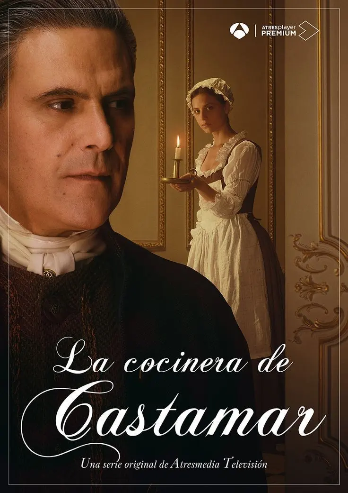
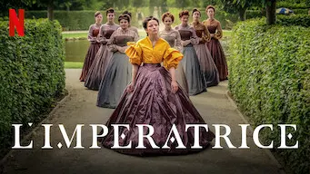
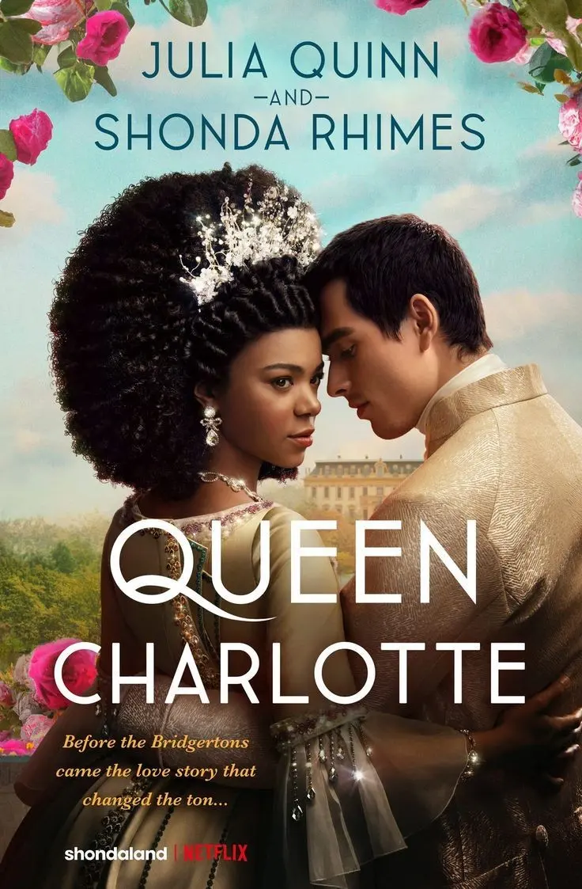

SERIE TV NETFLIX SULL'800 - TE NE CONSIGLIO 4

Le serie TV ambientate nell'epoca ottocentesca hanno sempre avuto un certo fascino per il pubblico.
Io, ad esempio, non posso fare a meno di ammirare i loro lussuosi costumi e gli intricati intrighi di corte.
Sono come delle porte che si spalancano davanti a noi, permettendoci di immergerci completamente in un mondo di regalità, romanticismo e dramma.
BRIDGERTON - serie tv Netflix
Una delle serie che ha attirato particolarmente la mia attenzione è "Bridgerton", un originale di Netflix basato sui romanzi di Julia Quinn.
È una storia coinvolgente che segue la vita dei membri della famiglia Bridgerton nella Londra del XIX secolo.
Mi ha affascinato vedere come i Bridgerton cercano l'amore, ma si ritrovino anche coinvolti in scandali e segreti alimentati dal gossip dell'alta società. I costumi di questa serie sono semplicemente mozzafiato e la colonna sonora moderna aggiunge un tocco interessante a questo periodo storico tradizionale.
Che tra l'altro è in uscita la terza stagione, ed io non vedo l'ora di vederla XD
LA CUOCA DI CASTAMAR - serie tv Netflix

Un'altra serie che mi ha rapito, sempre su Netflix, è "La Cuoca di Castamar", una produzione spagnola che ci catapulta nella Spagna del XVIII secolo.
La trama ruota attorno all'amore proibito tra Clara, una giovane cuoca, e il duca di Castamar.
Mi ha stupito come questa serie abbia saputo mescolare con abilità romanticismo, intrighi di corte e segreti in un contesto storico affascinante.
I costumi elaborati e l'ambientazione dettagliata mi hanno permesso di immergermi completamente nella vita di corte.
L'IMPERATEICE - serie tv Netflix

Non posso dimenticare "L'Imperatrice", una serie storica cinese che ci trasporta nell'antica Cina durante la dinastia Qing.
La trama ruota attorno a Zhen Huan, una concubina che naviga tra intrighi, rivalità e brutalità all'interno del palazzo imperiale. Questa serie affronta temi complessi come la politica, la vendetta e il potere, e sono rimasta colpita dall'attenzione ai dettagli dei costumi e delle ambientazioni d'epoca.
LA REGINA CHARLOTTE - serie tv Netflix

Infine, "La Regina Charlotte" racconta la storia della giovane Regina Charlotte di Gran Bretagna nel XVIII secolo, quando suo marito sale al trono come Re George III.
Questa serie ci mostra gli sforzi di Charlotte per adattarsi alla sua nuova vita e alle dinamiche della corte reale.
I costumi lussuosi e i set sontuosi ci riportano indietro nel tempo, regalandoci uno sguardo privilegiato alla vita delle monarchie europee dell'epoca.
Non vi nego che nell'ultima puntata mi è scesa anche la lacrimuccia.
Queste serie TV in stile ottocentesco ci permettono di sognare e ci trasportano in mondi lontani, dove la bellezza dei costumi, l'eleganza e l'intrigo si fondono per creare racconti coinvolgenti.
Quindi, se sei appassionato dell'epoca ottocentesca o semplicemente alla ricerca di qualcosa di nuovo da guardare, ti consiglio vivamente di dare un'occhiata a queste serie tv Netflix.
Non te ne pentirai sicuramente!